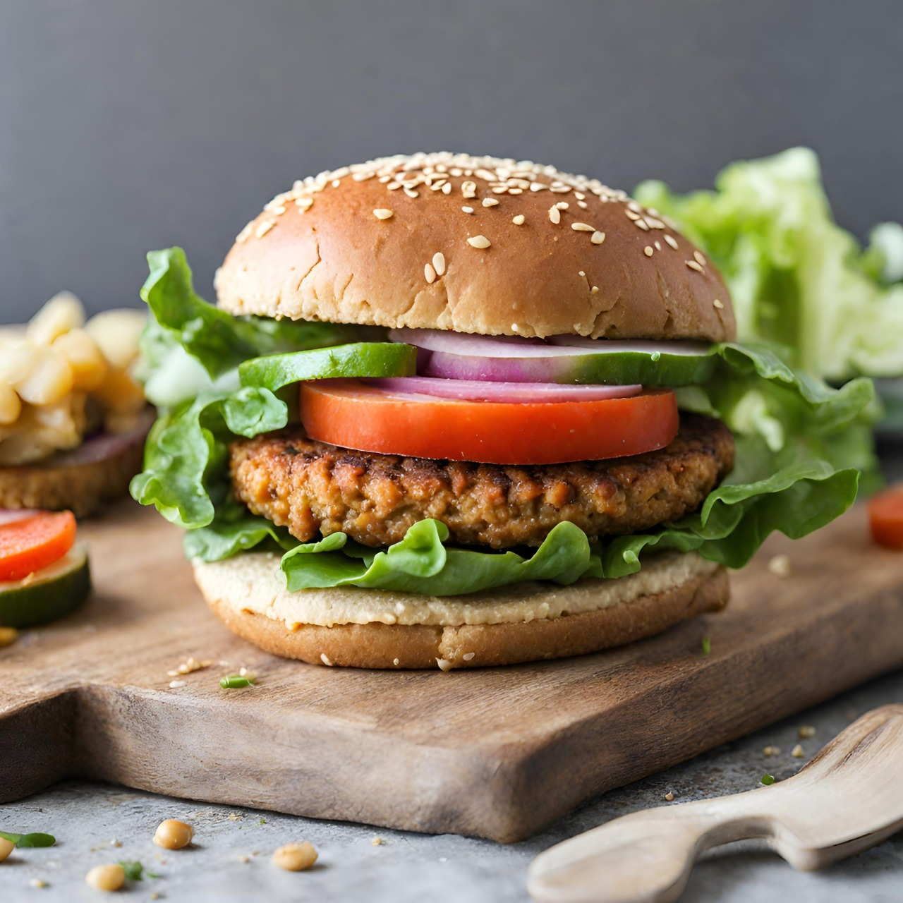

Hamburguer de Soja
Este hambúrguer vegano é delicioso e bem fácil de preparar.

MilkShake de Banana com Cacau
Aprenda a fazer um milkshake irresistível, que combina a suavidade da banana com o sabor intenso do cacau.

Picolé de Abacate
Aqui está uma receita simples, deliciosa e refrescante para fazer picolés nutritivos em casa.